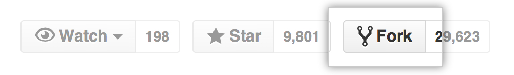

GitHub is all about collaborating. Two or more people can each have their own local copy of a repository, which they both sync to the same remote copy.
A note about Sync in GitHub for Mac
Those that are already familiar with Git may notice that there are no "Push" or "Pull" buttons in GitHub for Mac. Instead of bringing in new changes from the remote copy with one command and pushing your unpublished commits with another, GitHub for Mac uses a single "Sync" button that quickly completes both operations at the same. Behind the scenes, we do the equivalent of a `git pull --rebase` (but make sure to never rewrite merges).
Forking
In order to sync local changes to a remote repository on GitHub.com, you will need read & write permissions for it, otherwise known as 'push & pull' permission.
The easiest way to get push & pull permission on an open source project is to first "fork" it from GitHub.com to your own account.
Let's check out the following open source project called Spoon-Knife:
https://github.com/octocat/Spoon-Knife
This project is by a user named octocat, and we want to make our own changes to it. Fork it to your account by clicking the "Fork" button for this repository.

Cloning
Once you have forked your own version of this repository you will need to clone it to GitHub for Mac, so that you have a syncable, local copy.
-
Go to your account on GitHub.com and select the forked repository. The URL should look like this (where
my-usernameis replaced with your GitHub username):https://github.com/my-username/Spoon-Knife -
Click on the handy "Clone in Desktop" button to launch GitHub for Mac and start the clone.
You'll need to select a folder on your Mac to store the local copy, so just select a suitable location and click "Clone".
Celebrate
Congratulations! You now have your own forked version of an open source project, cloned and synced with GitHub for Mac. You're ready to start contributing!
Next, learn how to make changes and commit them with GitHub for Mac.